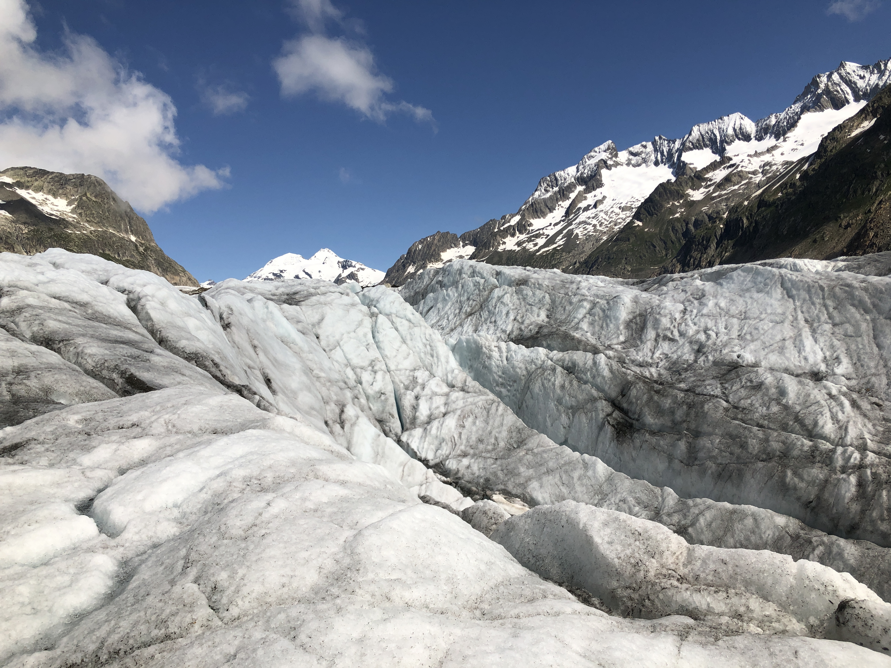
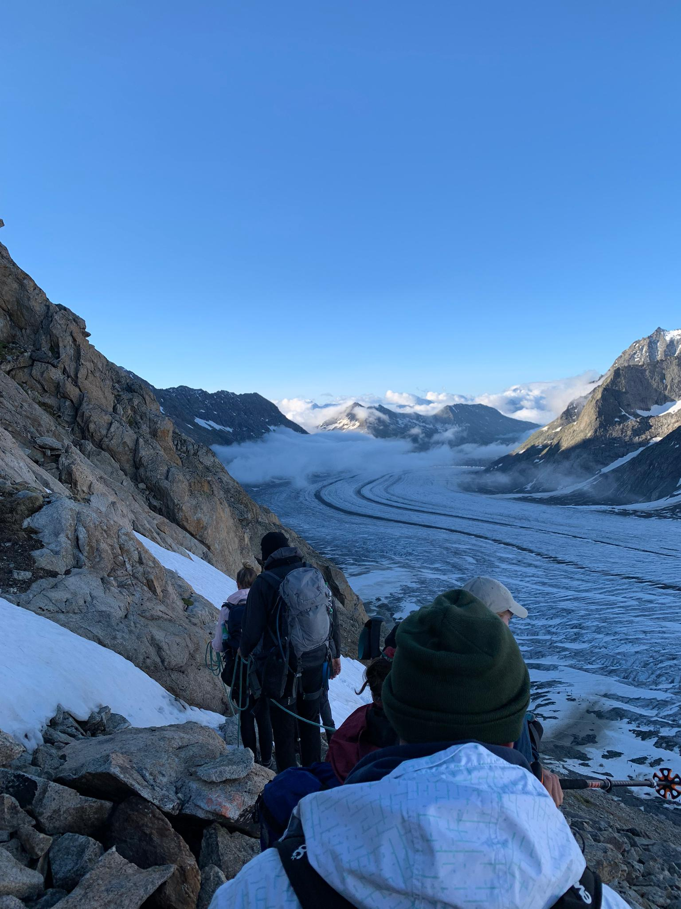

Rockfalls and glacier loss
Flooding and land loss
One degree sounds like nothing. Whether it's 18 or 19 degrees outside, most people barely notice. For our planet, that one degree makes an enormous difference. In Switzerland, glaciers and permafrost are melting. In Bangladesh, rivers overflow their banks and seawater keeps pushing further inland. The same warming. Two completely different consequences. Two completely different countries.
First, to Switzerland: cities are naturally getting warmer too, with more heat days and tropical nights. But climate change is most visible high up in the mountains — that's where it has the greatest impact on people. The Alps are changing visibly. Glaciers retreat further every year. They store water, shape landscapes, and draw millions of tourists. But they're losing ice faster and faster.
Volume loss (km³)
Click on a glacier for details.
With a volume loss of −1.9 km³, the Gorner Glacier is the most severely affected Swiss glacier. The lost mass is roughly equivalent to half the volume of Lake Zurich.
The Glacier d'Otemma in Valais lost −0.73 km³ — a dramatic decline for one of the region's large valley glaciers.
The Zmutt Glacier below the Matterhorn lost −0.5 km³.
Anyone hiking the Aletsch Glacier today sees the change with their own eyes. Trails have had to be relocated. Viewpoints now sit far above the ice. Mountain guides say the landscape changes almost every year.


Also: The Alps' frozen glue is melting. Permafrost is ground that stays frozen year-round. It holds rock together like a natural glue. When it thaws, mountains lose their stability. At the Schilthorn, for instance, the temperature has been above 0°C since 2022. The mountain is thawing. Other mountains with monitoring stations show similar results.
Source: PERMOS monitoring station Schilthorn. Dashed lines mark gaps in measurement (2001–2002, 2011).
The consequences? We saw it last year in Blatten. For a long time, Blatten was considered a safe mountain village. That changed in spring 2025. Millions of cubic meters of rock and ice crashed into the valley. Geologists had been watching the unstable mountain for weeks. Residents were evacuated in time — the village was destroyed, but no one died. Hundreds of people lost their homes. Images of it went around the world.
Blatten is being rebuilt. The federal government and canton are providing millions. Residents are meant to be able to return. Switzerland can afford it.
It's a completely different story in Bangladesh. Bangladesh is one of the countries suffering most severely from the effects of climate change. The country is flat. More than 170 million people live on an area only about three times the size of Switzerland. Many live just a few meters above sea level. The government tries to help. But Bangladesh is one of the poorest countries in the world — its means are nowhere near Switzerland's.
Flood Risk
Click on an area for the exact risk type (river/flash flood/storm surge)
During the monsoon, flooding has been part of life for centuries. Many families are prepared for it. Normally, the water recedes after a few days or weeks. But the floods are becoming more extreme, more often.
Source: NOAA Laboratory for Satellite Altimetry, Bay of Bengal. Values are anomalies (deviation from the reference level), not absolute sea level.
Source: NASA POWER, precipitation in Dhaka.
2017 is no outlier in the data. That year, one of the worst floods in decades hit the country. Millions of people lost their homes. Fields were destroyed. Thousands of villages remained underwater for weeks.

Many families left their homes for good. Some moved to Dhaka. Today, Dhaka is growing faster than almost any other major city in the world. Many people come from the countryside. Some are looking for work. Others simply no longer have a home.

One degree sounds like nothing. But this one degree changes landscapes. It changes cities. It changes lives. Switzerland and Bangladesh are thousands of kilometres apart. Yet both are living through the same warming. The difference is not whether they are affected. The planet is warming for everyone. But not everyone pays the same price.
Glacier volume loss from the Swiss Glacier Inventory (GLAMOS/SGI). Permafrost ground temperatures from the PERMOS monitoring network, filtered to ~10m depth (the standard reference depth in permafrost research), averaged per site and year.
Flood risk from a hazard map by the Bangladesh Agricultural Research Council (BARC/SPARRSO, via the Humanitarian Data Exchange). Sea level anomaly from satellite data by the NOAA Laboratory for Satellite Altimetry (Bay of Bengal, since 1993). Precipitation from NASA POWER satellite data for Dhaka.
All raw data was cleaned in Python (pandas/geopandas): tables were merged, filtered to reference depths or complete years, aggregated into annual values, and, for precipitation, converted from daily to annual totals. Missing measurement years are shown in the charts as dashed lines, not hidden.
Maps built with Mapbox GL JS (including national borders, scroll behavior, and zoom controls), time series charts built with D3.js (scroll-triggered animation, interactive tooltips, data gaps shown as dashed lines).